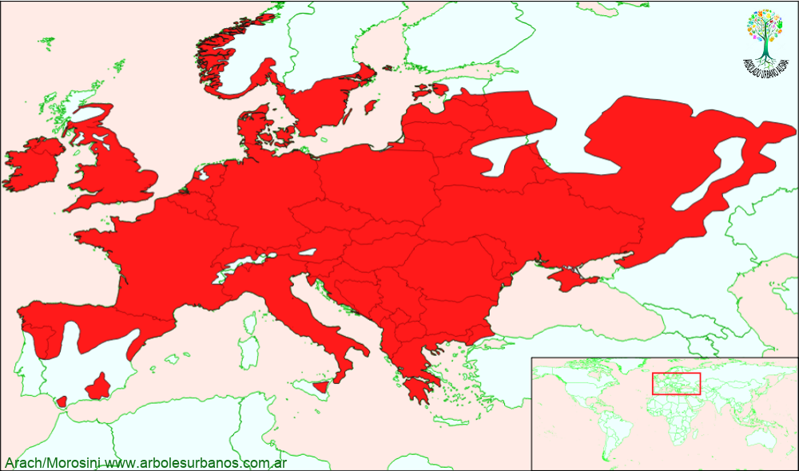

Click en las imágenes para ampliar

{kind=link}
{kind=link}
{kind=link}
Manzano
NOMBRE CIENTÍFICO: Malus sylvestris
FAMILIA BOTÁNICA: Rosáceas
ORIGEN: El área de distribución natural es el centro de Eurasia, entre Bielorusia, centro este de Rusia y Ucrania, pero naturalizada en toda Europa y gran parte de Asia. En Argentina esta asilvestrada en la norpatagonia.
DESCRIPCIÓN GENERAL: Es un árbol de pequeña talla creciendo entre 3 y 9 metros de altura, con un tronco entre recto y tortuoso formando una copa globosa desde escasa altura. Tiene una corteza gris y medianamente lisa, luego se fisura en pequeñas placas.
HOJAS: Su follaje es caduco, está formado por hojas simples, alternas de forma ovado elípticas de borde finamente aserrado. De color verde oscuro y luego en el otoño amarillas.
FLORES: Florece desde principios de la primavera, son de color banco o a veces tenuemente rosas.
F RUTOS: So n pomos de color amarillo verdoso a rojizas de por lo menos 5 cm de diámetro, de pulpa dura y en general bastante ácida, en las variedades cultivadas mucho más grandes y dulces.
USOS: Sus frutos se utilizan para la elaboración de sidra y vinagre, además de dulces, las variedades para la producción de fruta, aunque se utizan las variedades para eso. Tiene un muy buen potencial como ornamental debido a su floración, sus colores otoñales y su tamaño, además de su rusticidad, lo hacen ideal tanto para jardines pequeños como para parques formando macizos.
REPRODUCCIÓN: Se lo puede reproducir por semillas, las variedades por medio de injertos, sobre pies de esta especie o de otras como el membrillero.
PARTICULARIDADES: El nombre es sinónimo del Malus communis , este es la base de la mayoría de las variedades logradas a través de injertos.